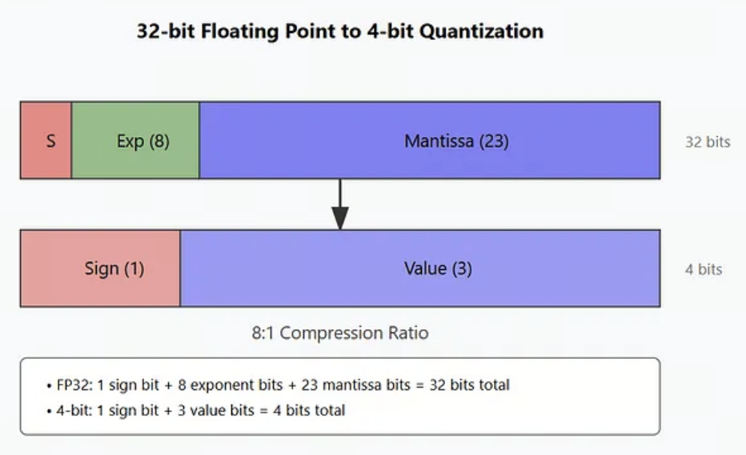
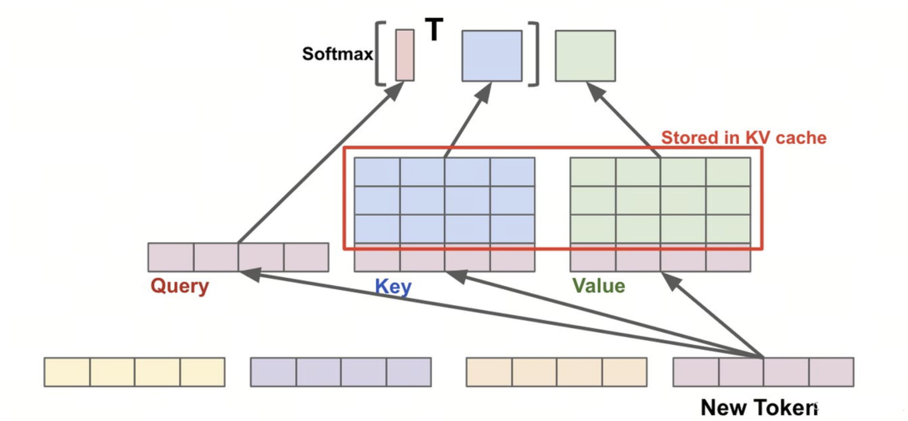
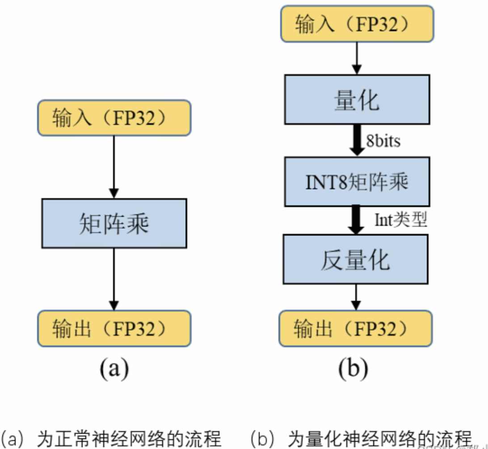
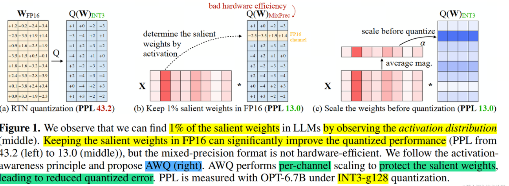
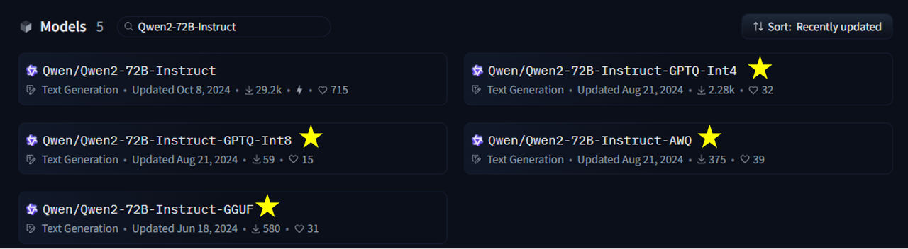

第4课时：模型部署与推理加速¶
当你在手机上用通义千问生成旅行攻略、在浏览器里和 GPT 讨论论文时，你可能没意识到：
这些看似“轻盈流畅”的体验，其实背后是一场精密的“系统工程”—— 大模型不是直接跑起来的，而是经过层层优化后“飞”起来的。
这一课，我们将探索模型如何通过部署与推理加速，真正走出实验室、走进现实世界。
本课将聚焦三大核心方向：
- 推理引擎架构：vLLM 与 PagedAttention 的底层机制；
- 吞吐优化技术：Continuous Batching、Speculative Decoding（投机采样）、KV Cache 量化；
- 部署量化策略：AWQ、GPTQ、SmoothQuant 的原理对比与精度分析。
用通俗语言 + 数学公式 + 工业界真实部署案例，带你从“会跑”走向“跑得又快又稳”。
1. 为什么需要推理加速？——从“能跑”到“跑得快、跑得起”¶
1.1 大模型的“三高”困境¶
一个典型的 70 亿参数（7B）大语言模型（如 LLaMA-2-7B、Qwen-7B）在默认 FP32 精度下：
- 高内存占用：仅模型权重就需约 28 GB（7B × 4 字节）；
- 高计算量：生成 1 个 token 需做数十亿次浮点运算（FLOPs）；
- 高延迟：在普通 A10 GPU 上，首次响应可能需 2–5 秒，无法满足交互式需求。
这导致一个问题：模型虽强，但“用不起、等不及”。
💡 举个生活化的例子：
预训练相当于让一个博士读遍天下书；
而推理加速，则是帮他配一副眼镜、买一辆电动车、再给他装个导航——
不是让他变聪明，而是让他更高效地服务大众。
1.2 部署目标的三角权衡¶
在工业界，推理部署的目标通常围绕三个维度权衡：
| 维度 | 描述 | 优先级场景 |
|---|---|---|
| 延迟（Latency） | 单请求响应时间 | 聊天机器人、实时翻译 |
| 吞吐量（Throughput） | 单位时间处理请求数 | 批量摘要、API 服务 |
| 成本（Cost） | 单 token 的计算/电力/硬件开销 | 大规模在线服务、边缘设备 |
优化的本质，是在精度损失可接受的前提下，在这三者之间找到最佳平衡点。
2. 推理加速的核心思想：压缩 + 并行 + 融合¶
推理加速不是单一技术，而是一套“组合拳”。其核心可归纳为三大策略：
- 压缩（Compression）：减少模型规模与计算量；
- 并行（Parallelism）：提升硬件利用率；
- 融合（Fusion）：减少内存访问与调度开销。
下面我们逐层展开，从最基础、最有效的量化开始。
3. 量化（Quantization）——精度换效率的“性价比之王”¶
3.1 什么是量化？¶
量化是将模型中高精度的浮点数（如 FP32、FP16）转换为低精度的整数（如 INT8、INT4）的技术。

🧠 关键洞察：
大模型在推理时，不需要训练时那么高的数值精度。
大量研究表明，权重和激活值的分布高度集中，低比特表示足以保留关键信息。
3.2 量化数学原理¶
假设原始浮点值 \(x \in [x_{\min}, x_{\max}]\)，我们希望将其映射到 \(b\)-bit 整数（如 \(b=8\)，范围 \([0, 255]\)）。
线性量化公式： $$ x_q = \text{round}\left( \frac{x - x_{\min}}{x_{\max} - x_{\min}} \cdot (2^b - 1) \right) $$
- \(x\)：原始浮点数值；
- \(x_{\min}, x_{\max}\)：该张量（或通道）中所有元素的最小值和最大值；
- \(b\)：目标整数位宽（如 4 表示 INT4，8 表示 INT8）；
- \(2^b - 1\)：\(b\)-bit 无符号整数的最大值（如 INT8 为 255）；
- \(\text{round}(\cdot)\)：四舍五入取整；
- \(x_q\)：量化后的整数值。
反量化（用于计算）： $$ \tilde{x} = x_{\min} + \frac{x_q}{2^b - 1} \cdot (x_{\max} - x_{\min}) $$
其中 \(\tilde{x}\) 是近似值，用于后续矩阵乘法等操作。
🔍 注意：实际系统中常使用对称量化（zero-point=0）或非对称量化（含 zero-point），以更好拟合分布。
3.3 量化类型与演进¶
| 类型 | 说明 | 代表方法 |
|---|---|---|
| PTQ（Post-Training Quantization） | 训练后直接量化，无需再训练 | GGUF、bitsandbytes |
| QAT（Quantization-Aware Training） | 训练时模拟量化，精度更高 | TensorFlow QAT |
| AWQ（Activation-aware Weight Quantization） | 仅量化“不重要”权重，保留关键通道 | Liu et al., 2023 |
| GPTQ（Group-wise Quantization） | 按通道分组量化，减少误差传播 | Frantar et al., 2022 |
✅ 业界趋势：
对于 7B–70B 级别模型，4-bit AWQ/GPTQ 已成为主流，在几乎无损精度下实现 3–4 倍显存节省。
4. 推理引擎架构详解：vLLM 与 PagedAttention¶
4.1 KV Cache 的内存瓶颈¶

在自回归生成中，KV Cache 随上下文长度线性增长。以 LLaMA-2-7B 为例：- 每 token KV ≈ 16 KB（32 heads × 128 dim × 2 × FP16）；
- 32k 上下文 → 512 MB / 请求；
- 并发 16 请求 → >8 GB，且需连续内存分配。
传统实现使用 torch.cat 动态拼接，导致严重内存碎片和拷贝开销。
4.2 PagedAttention：虚拟内存式 KV 管理¶
vLLM 借鉴操作系统分页机制，将 KV Cache 划分为固定大小 Block（默认 16 tokens/block）。
关键机制：¶
- 每个请求维护一个 Page Table：逻辑块 → 物理块映射；
- 全局 Block Pool：预分配显存池，支持动态分配/回收；
- 注意力计算通过索引表拼接逻辑连续、物理非连续的块。
注意力计算不变性：¶
- \(Q \in \mathbb{R}^{1 \times d}\)：当前 token 的 Query 向量；
- \(K \in \mathbb{R}^{T \times d}\)：历史所有 token 的 Key 矩阵；
- \(V \in \mathbb{R}^{T \times d}\)：历史所有 token 的 Value 矩阵；
- \(d\)：每个注意力头的维度（如 128）；
- \(T\)：当前上下文长度（即已生成 token 数 + 输入长度）。
PagedAttention 不修改公式，仅优化内存布局，实现零拷贝、高利用率。
5. 吞吐优化三大核心技术¶
5.1 Continuous Batching（连续批处理）¶
问题¶
传统批处理要求所有请求同时开始、同时结束，但真实请求：
- 到达时间随机；
- 生成长度差异大（10 vs 1000 tokens）。
→ GPU 大量时间空闲。
解决方案¶
- 动态调度器：实时监控请求状态；
- 仅对 active 请求批处理：batch size 动态变化；
- GPU 始终满载，吞吐提升 10–20 倍。
✅ 实测（LLaMA-2-7B）：HuggingFace 7 req/s → vLLM 170 req/s
5.2 Speculative Decoding（投机采样）¶
核心思想¶
“用小模型猜，大模型验”——用廉价计算替代昂贵计算。
算法流程¶
- 草稿模型（如 100M）生成 \(k\) 个候选 token；
- 目标模型（如 LLaMA-7B）一次性验证所有候选；
- Token Acceptance Rule：
- \(t\)：当前生成步；
- \(x_{<t+i}\)：截至第 \(t+i-1\) 个 token 的上下文；
- \(x_{t+i}\)：第 \(t+i\) 个候选 token；
- \(p_t(\cdot \mid \cdot)\)：目标大模型（如 LLaMA-3）的条件概率；
- \(p_d(\cdot \mid \cdot)\)：草稿小模型（如 llama-160m）的条件概率；
- \(u_i\)：从均匀分布 \(\mathcal{U}(0,1)\) 中采样的随机数；
- \(m\)：最大被接受的索引（从 0 开始）；
-
最终接受前 \(m+1\) 个 token。
-
接受前 \(m+1\) 个 token。
🌟 效果：
- 吞吐提升 2–3 倍；
- 被 xAI（Grok）、Meta 用于线上服务；
- Medusa：在主模型加多预测头，无需额外小模型。
5.3 KV Cache Quantization¶
动机¶
KV Cache 占比随上下文增长而升高（32k 时 >50%）。
方法¶

这张图片对比了正常神经网络推理流程（图 a）与量化神经网络推理流程（图 b），直观展示了“量化”如何在保持精度的前提下大幅降低计算和存储开销。
-
INT8 对称量化： $$ K_q = \text{round}\left( \frac{K}{s_K} \right), \quad s_K = \frac{\max(|K|)}{127} $$
-
\(K \in \mathbb{R}^{T \times d}\)：原始 FP16 Key 矩阵；
- \(|K|\)：对 \(K\) 中每个元素取绝对值；
- \(\max(|K|)\)：\(K\) 中绝对值的最大值；
- \(s_K\)：缩放因子（scale），用于归一化；
- \(K_q\)：量化后的 INT8 矩阵；
-
127：INT8 有符号整数的最大正值（范围 [-128, 127]）。
-
FP8：H100 硬件加速，动态范围更大。
✅ 精度影响：MMLU 下降 <0.2%（几乎无损）
✅ 显存节省：KV Cache 减半 → 吞吐提升 1.3–1.5 倍
6. 高级量化策略深度对比¶
6.1 问题根源：权重分布异质性¶
LLaMA-2-7B 的 FFN 层中：
- 95% 通道：\(|w| < 1.0\)
- 5% 通道：\(|w| > 5.0\)（“异常值”）
→ 均匀量化会因异常值拉低整体精度。
6.2 AWQ（Activation-aware Weight Quantization）¶
下图是AWQ的核心示意图，它通过分析模型在少量校准数据上的激活分布，识别出对输出影响最大的“重要通道”（salient channels），并仅对不敏感的权重进行量化，从而在保持高精度的同时实现高效压缩。

- 核心：通过少量校准数据（~128 样本）分析激活分布，识别重要通道；
-
操作：引入通道缩放因子 \(\alpha\)，仅量化不敏感通道： $$ W_{\text{quant}} = \text{Quantize}(W \odot \alpha) \oslash \alpha $$
- \(W \in \mathbb{R}^{d_{\text{in}} \times d_{\text{out}}}\)：原始权重矩阵；
- \(\alpha \in \mathbb{R}^{d_{\text{out}}}\)：每输出通道一个的缩放因子（向量）；
- \(\odot\)：按列（输出通道）的逐元素乘法（即 \(W_{:,j} \cdot \alpha_j\)）；
- \(\oslash\)：按列的逐元素除法；
- \(\text{Quantize}(\cdot)\)：对缩放后的权重进行 INT4 量化；
- 该变换是等效的，不改变 \(XW\) 的输出（若量化无损）。
-
精度：INT4 下 MMLU 损失 <1%
- 支持：vLLM、AutoGPTQ、TGI
6.3 GPTQ（Group-wise Post-Training Quantization）¶
- 核心：按权重列分组（如 128 元素/组），组内独立量化；
- 优化：贪心逐层 + Hessian 信息校正误差；
- 优势：无需激活数据，仅需权重；
- 工具：AutoGPTQ
算法原理¶
GPTQ 的核心思想是将量化视为一个逐列最优回归问题。对于每一列权重 \(W_{:j}\)，它寻找最优的量化值 \(Q_{:j}\)，使得量化前后该列对输出的影响最小：
其中 \(H\) 是 Hessian 矩阵的近似（通过对校准数据的输入激活计算 \(H = XX^\top\)），用于衡量每个权重元素对最终输出的影响程度。
算法流程¶
- 收集校准数据：用少量样本（通常 128 条）前向传播，累积各层的 Hessian 近似 \(H\)；
- 逐列贪心量化：对每一列权重，选择使 Hessian 加权误差最小的量化值；
- 误差传播校正：量化完一列后，将量化误差传播到剩余未量化列： $$ W_{:, \text{rest}} \leftarrow W_{:, \text{rest}} - \frac{W_{:j} - Q_{:j}}{H_{jj}^{-1}} H_{j, \text{rest}}^{-1} $$
- 分组处理：为减少误差累积，将权重按 128 列分组，组内共享量化参数。
与 AWQ 的对比¶
| 维度 | GPTQ | AWQ |
|---|---|---|
| 是否需要校准数据 | 是（计算 Hessian） | 是（计算激活分布） |
| 量化策略 | 逐列贪心 + 误差校正 | 通道缩放 + 均匀量化 |
| 推理开销 | 低（量化后纯 INT4 推理） | 低（量化后纯 INT4 推理） |
| 量化速度 | 较慢（需逐列优化） | 较快（通道级缩放） |
| 精度表现 | 略优（误差校正更精细） | 略逊但差距极小 |
6.4 SmoothQuant¶
-
核心：通过缩放矩阵 \(S\) 平滑激活与权重分布： $$ XW = (XS)(S^{-1}W) $$
- \(X \in \mathbb{R}^{B \times d_{\text{in}}}\)：输入激活矩阵；
- \(W \in \mathbb{R}^{d_{\text{in}} \times d_{\text{out}}}\)：权重矩阵；
- \(S \in \mathbb{R}^{d_{\text{in}} \times d_{\text{in}}}\)：对角缩放矩阵，\(S_{ii} = s_i > 0\)；
- \(XS\)：缩放后的激活，动态范围更小；
- \(S^{-1}W\)：缩放后的权重，异常值被抑制；
- 该变换是等效的，输出不变。
-
优势：支持 INT8 全量化（权重+激活）；
- 代表应用：NVIDIA TensorRT-LLM
为什么需要 SmoothQuant？¶
大语言模型（如 LLaMA、OPT）的激活分布中存在显著的异常值（Outliers）——某些通道的激活值远超其他通道（可达 10-100 倍）。这些异常值使得激活难以直接量化为 INT8（量化步长过大，导致非异常通道精度严重损失）。
SmoothQuant 的洞察是：激活的异常值与权重的异常值在通道维度上高度相关。通过将这些"难度"从激活侧迁移到权重侧，可以让两侧都变得"易于量化"。
缩放因子的计算¶
缩放因子 \(s_i\) 按通道计算，核心公式为：
其中：
- \(\max(|X_i|)\)：第 \(i\) 通道激活绝对值的最大值（在校准集上统计）；
- \(\max(|W_i|)\)：第 \(i\) 通道权重绝对值的最大值；
- \(\alpha \in [0, 1]\)：平滑强度超参数，控制难度迁移的比例：
- \(\alpha = 0\)：不迁移，激活承担全部难度；
- \(\alpha = 1\)：完全迁移，权重承担全部难度；
- \(\alpha = 0.5\)：均分难度（常用默认值）。
算法流程¶
-
校准阶段：
- 用少量样本（通常 128 条）前向传播，收集各层激活的逐通道最大值 \(\max(|X_i|)\)；
- 读取各层权重的逐通道最大值 \(\max(|W_i|)\)；
- 按公式计算每层的缩放因子 \(s_i\)。
-
平滑变换：
- 激活侧：\(X' = X \cdot S\)，动态范围缩小，异常值被压缩；
- 权重侧：\(W' = S^{-1} \cdot W\)，权重吸收异常值，分布更平滑。
-
INT8 量化：
- 对平滑后的 \(X'\) 和 \(W'\) 分别进行 INT8 线性量化；
- 由于两侧分布都已平滑，量化误差显著降低。
-
INT8 GEMM 推理：
- 使用 INT8 矩阵乘法计算 \(X'_q W'_q\)；
- 反量化后得到近似输出。
与 AWQ/GPTQ 的本质区别¶
| 维度 | SmoothQuant | AWQ / GPTQ |
|---|---|---|
| 量化对象 | 权重 + 激活（全量化） | 仅权重 |
| 推理精度 | INT8 | INT4 |
| 适用场景 | 严格低延迟、需全 INT8 流水线 | 显存受限、追求极致压缩 |
| 校准依赖 | 需要（统计激活分布） | 需要（Hessian / 激活敏感度） |
| 硬件友好度 | 极高（纯 INT8 GEMM） | 高（需专用 INT4 kernel） |
在 TensorRT-LLM 中的应用¶
NVIDIA TensorRT-LLM 将 SmoothQuant 作为 INT8 推理的标准方案： - 自动完成校准、平滑变换和 INT8 kernel 生成； - 结合 FP8 支持（H100），进一步将动态范围从 INT8 的 256 级扩展到 FP8 的指数+尾数表示； - 在 LLaMA-2-70B 上，SmoothQuant INT8 相比 FP16 显存减半、吞吐提升 1.5-2 倍，MMLU 精度损失 <0.5%。
6.5 策略选择建议¶
| 场景 | 推荐 | 理由 |
|---|---|---|
| 本地部署（Mac/PC） | GGUF (Q4_K_M) | 无需 GPU，开箱即用 |
| 高吞吐 API 服务 | AWQ + vLLM | 精度高、速度快、生态成熟 |
| 超大规模（70B+） | GPTQ + ExLlama | 内存极致优化 |
| NVIDIA GPU 生产 | SmoothQuant + TensorRT-LLM | 硬件深度优化，支持 FP8 |
⚠️ 注意：AWQ/GPTQ 模型不兼容，需匹配对应推理引擎。
7. 主流推理引擎对比与选型¶
| 引擎 | 核心技术 | 量化支持 | 硬件 | 适用场景 |
|---|---|---|---|---|
| vLLM | PagedAttention、Continuous Batching | AWQ、GPTQ、INT8 KV | NVIDIA GPU | 高吞吐 API 服务 |
| TGI | FlashAttention、Tensor Parallelism | AWQ、GPTQ、bitsandbytes | NVIDIA/AMD/TPU | HuggingFace 生态 |
| llama.cpp | GGUF、CPU+GPU hybrid | GGUF (1.5–8 bit) | CPU/Apple Silicon/NVIDIA/AMD | 本地/边缘部署 |
| TensorRT-LLM | Kernel Fusion、FP8 | SmoothQuant、AWQ | NVIDIA GPU | 超大规模生产 |
📌 最新动态：
- Hugging Face Inference Endpoints 已原生支持 GGUF；
- llama.cpp 新增 gpt-oss MXFP4、多模态、OpenAI API 兼容服务器；
- vLLM 支持 Speculative Decoding、FP8 KV Cache
8. 实战演练：联合优化部署 Qwen¶
8.1 使用 vLLM 部署¶
上述命令将在 4 块 GPU 上使用张量并行。您应根据需求调整 GPU 的数量。 默认情况下，如果模型未指向有效的本地目录，它将从 Hugging Face Hub 下载模型文件。要从 ModelScope 下载模型，请在运行上述命令之前设置以下内容： 同时也支持使用 Python 库中的 vLLM 进行部署from transformers import AutoTokenizer
from vllm import LLM, SamplingParams
# Initialize the tokenizer
tokenizer = AutoTokenizer.from_pretrained("Qwen/Qwen3-8B")
# Configurae the sampling parameters (for thinking mode)
sampling_params = SamplingParams(temperature=0.6, top_p=0.95, top_k=20, max_tokens=32768)
# Initialize the vLLM engine
llm = LLM(model="Qwen/Qwen3-8B")
# Prepare the input to the model
prompt = "Give me a short introduction to large language models."
messages = [
{"role": "user", "content": prompt}
]
text = tokenizer.apply_chat_template(
messages,
tokenize=False,
add_generation_prompt=True,
enable_thinking=True, # Set to False to strictly disable thinking
)
# Generate outputs
outputs = llm.generate([text], sampling_params)
# Print the outputs.
for output in outputs:
prompt = output.prompt
generated_text = output.outputs[0].text
print(f"Prompt: {prompt!r}, Generated text: {generated_text!r}")
8.2 使用LazyLLM来部署服务¶
LazyLLM 原生支持了 LightLLM、LMDeploy 和 vLLM 三种大模型推理加速框架和 Infinity 嵌入模型加速框架，用户在使用时仅需通过 TrainableModule.deploy_method 指定对应的框架即可。
from lazyllm import TrainableModule, deploy
llm = TrainableModule('model_name').deploy_method(deploy.vllm)
print(llm("hello, who are you?"))

下面我们简单对比一下二者的运行速度（更严谨的情况下可以对比多次执行的差异，完整代码见GitHub链接）：
import time
from lazyllm import TrainableModule, deploy, launchers
start_time = time.time()
llm = TrainableModule('Qwen2-72B-Instruct').deploy_method(
deploy.Vllm).start()
end_time = time.time()
print("原始模型加载耗时：", end_time-start_time)
start_time = time.time()
llm_awq = TrainableModule('Qwen2-72B-Instruct-AWQ').deploy_method(deploy.Vllm).start()
end_time = time.time()
print("AWQ量化模型加载耗时：", end_time-start_time)
query = "生成一份1000字的人工智能发展相关报告"
start_time = time.time()
llm(query)
end_time = time.time()
print("原始模型耗时：", end_time-start_time)
start_time = time.time()
llm_awq(query)
end_time = time.time()
print("AWQ量化模型耗时：", end_time-start_time)
原始模型加载耗时： 129.6051540374756
原始模型耗时： 13.104065895080566
AWQ量化模型加载耗时： 86.4980857372284
AWQ量化模型耗时： 8.81701111793518
LazyLLM 输出的日志信息中的 token/s 信息分别为：
INFO 03-12 19:52:50 metrics.py:341] Avg prompt throughput: 6.6 tokens/s, Avg generation throughput: 30.8 tokens/s
INFO 03-12 20:00:03 metrics.py:341] Avg prompt throughput: 6.6 tokens/s, Avg generation throughput: 41.2 tokens/s
AWQ 模型在单卡上的加载和执行耗时为：137 秒和 23 秒，也就是说，当有 4 张卡的时候，量化模型可以多处理 1.3-1.4 倍的请求。而当用户无法满足执行原模型的资源时，可以通过量化模型获得与原模型效果差异不大的生成效果（官方数据称量化模型在MMLU，CEval，IEval上的评测平均值只差0.9个点）。
9. 性能评估与调优¶
9.1 关键指标¶
| 指标 | 说明 |
|---|---|
| Latency (ms/token) | 单 token 生成时间 |
| Throughput (tokens/s) | 单位时间生成 token 数 |
| Memory Usage (GB) | 显存或内存占用 |
| Accuracy Drop (%) | 相比 FP16 的 MMLU/ARC 下降 |
9.2 调优建议¶
- 延迟高 → 启用 Speculative Decoding、FlashAttention；
- 显存爆 → 启用 PagedAttention、KV Cache 量化；
- 精度崩 → 从 INT4 改为 INT8，或使用 AWQ/GPTQ；
- 吞吐低 → 启用 Continuous Batching、增大 max_num_seqs。
10. 总结：推理加速的三层加速塔¶
| 层级 | 技术 | 原理 | 典型收益 |
|---|---|---|---|
| 内存层 | AWQ/GPTQ、KV Cache 量化 | 减少 HBM 访问 | 显存 ↓50–75%，吞吐 ↑1.5x |
| 调度层 | PagedAttention、Continuous Batching | 提升 GPU 利用率 | 吞吐 ↑5–20x |
| 预测层 | Speculative Decoding、Medusa | 用小模型预跑 | 延迟 ↓2–3x |